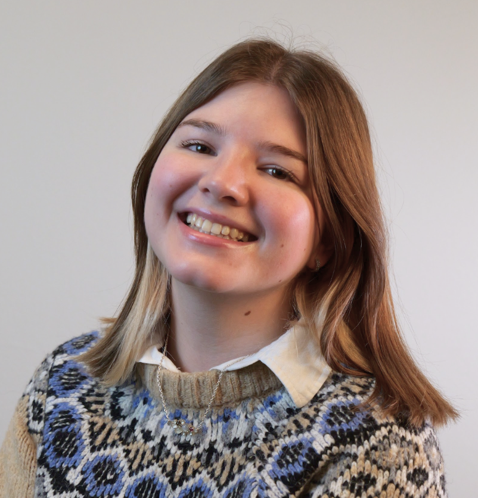
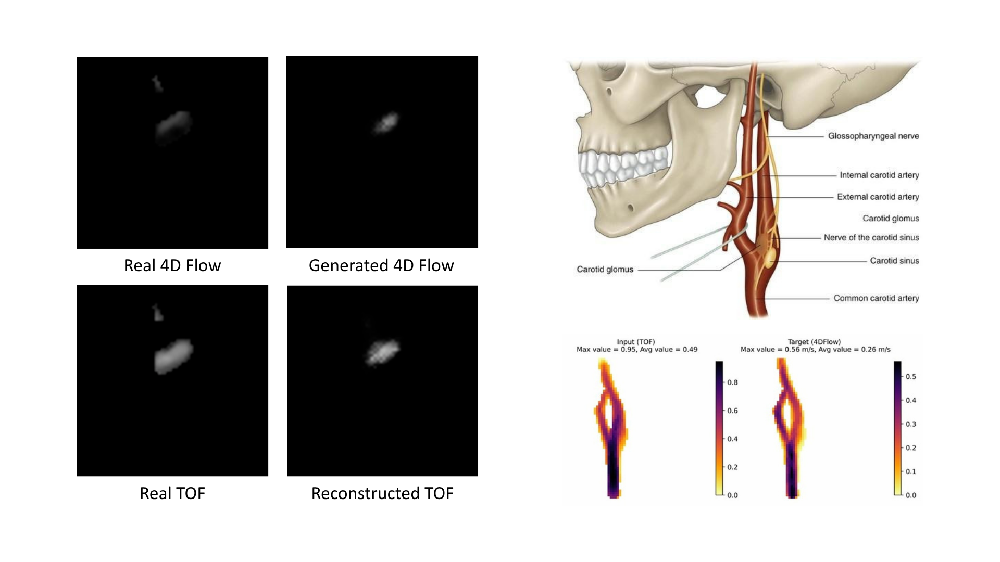
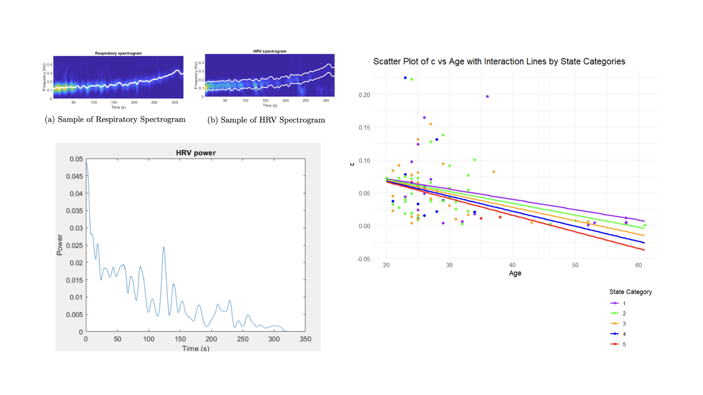
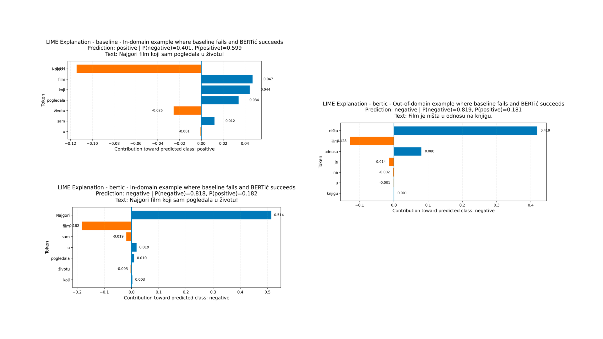
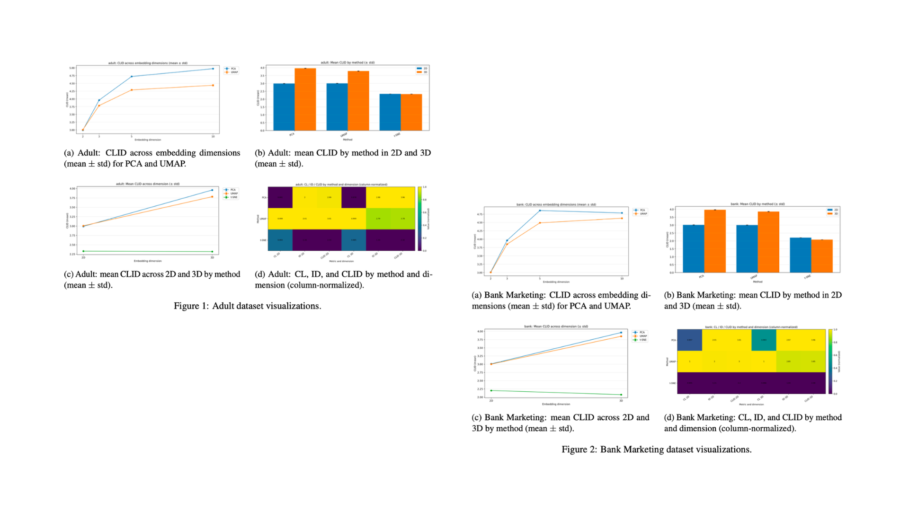
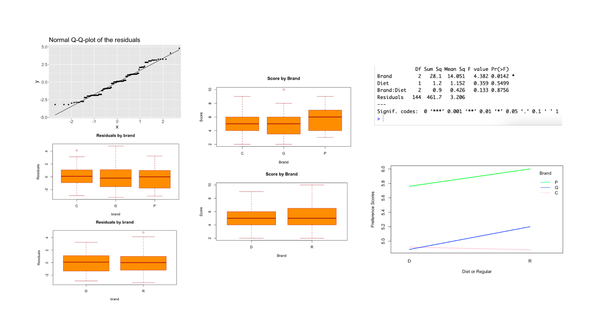

I'm Ana and I hold a Master's in Statistics and Machine Learning from Linköping University and a Bachelor's in Mathematics from Lund University. My academic work spans statistical modeling, predictive analytics, data mining, and medical image analysis.
My thesis research at the Center for Medical Image Science and Visualization focused on AI-driven MRI image translation between modalities. Even before that, however, I'd published several research projects in the fields of machine learning and biology.
I work confidently across the full data lifecycle: extracting, cleaning, modeling, visualizing, and communicating findings to both technical and non-technical audiences.

Used two image-to-image translation models to generate blood flow velocity magnitude from MRI images, then compared the generated velocity magnitudes to check whether hemodynamic information can be derived from more general vessel structures.

Analyzed HRV signals from 97 participants using spectral analysis. HRV power was modeled through an exponential decay function, extracting two key parameters: a (exponential decrease multiplier) and c (amplitude multiplier). Statistical analysis was then applied to assess how factors such as age, sex, SMBQ, BMI, height, weight, and anxiety (state and trait) influence these parameters.

Compared TF-IDF + Logistic Regression against BERTić (a transformer model) for binary sentiment classification of Serbian short reviews using the SentiComments.SR dataset.

Evaluated dimensionality reduction techniques using the CLID metric, to assess machine learning representation quality without supervised tasks. PCA, t-SNE, and UMAP were applied to two UCI tabular datasets (Adult and Bank Marketing), with CLID scores computed across 2D, 3D, and higher-dimensional outputs.

Designed, collected data for, and executed a controlled experiment comparing taste perceptions of diet versus regular sodas across three brands (CocaCola, Pepsi, CubaCola). Assessed the sensory effects of artificial sweeteners using linear regression and ANOVA analysis.
Regression, hypothesis testing, time-series analysis, experiment design, and Bayesian methods grounded in strong mathematical foundations.
Supervised and unsupervised learning, deep learning for image tasks, model evaluation, feature engineering, and data mining workflows.
Python and R for analysis, modeling, and automation. Comfortable with scripting, data wrangling libraries, and reproducible research notebooks.
Crafting clear, effective visual narratives from complex datasets using both static and interactive plotting tools.
Data extraction, cleaning, and pipeline construction. Comfortable structuring data from raw sources into analysis-ready formats.
Formulating hypotheses, designing studies, writing reports, and presenting findings to diverse audiences with clarity and precision.
Looking for Data Analyst or Data Engineering roles. If you think there's a fit, I'd be happy to chat!